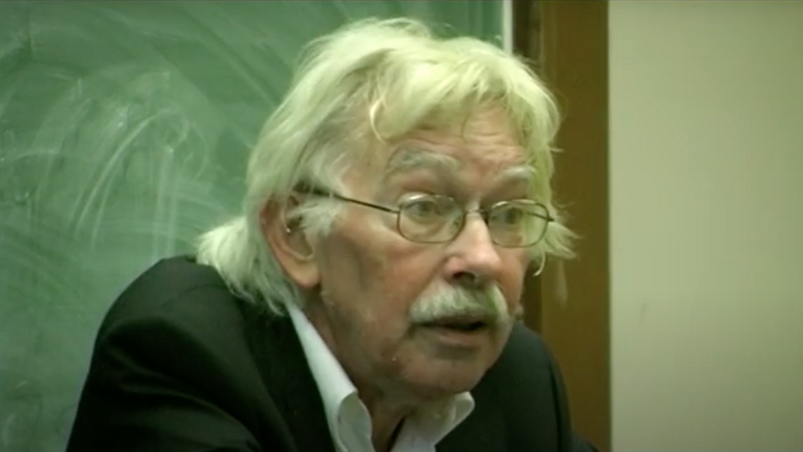
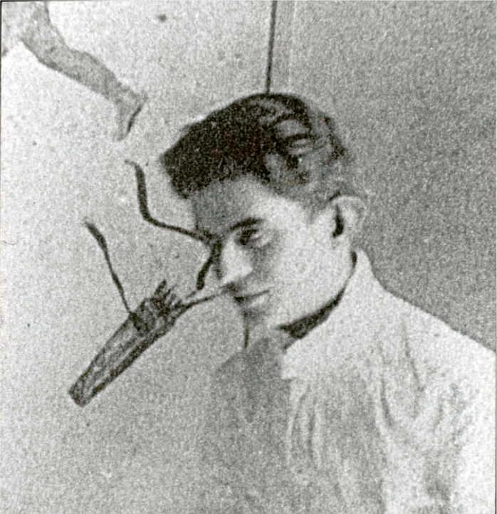
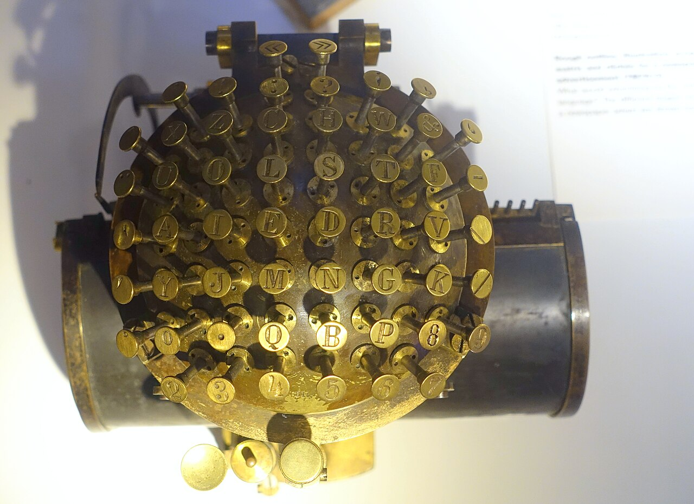

PART 5. 기호·기록·코드 · 12주차 상징성 물질성
사유가 매체를 만드는 것이 아니라
매체가 사유의 가능 범위를 정함
프리드리히 키틀러 — 기록체계
00이 주차의 위상
여는 질문 — 생각이 먼저인가, 기록 장치가 먼저인가
- "내 생각을 글로 옮긴다"고 말함. 생각이 먼저 있고, 글이 나중이라는 것.
- 그런데 손글씨 · 타자기 · 워드프로세서 · 음성입력 · AI 자동완성으로 쓴 글은 서로 다름.
- 문체도, 길이도, 구조도, 심지어 무엇을 생각하는지도 다름.
- 직접 확인해 볼 것 — 같은 내용을 손으로 종이에 쓴 것과 휴대폰 메모에 쓴 것을 비교하면, 대개 손글씨가 더 짧고 휴대폰이 더 길고 문어체임. 도구가 문장을 바꿨음.
축 태그가 두 개인 이유
- 1주차 계보는 키틀러를 상징성에 놓음 — 기록·코드·기호 체계를 다루기 때문임.
- 그러나 키틀러의 결론은 물질성으로 감 — 하드웨어와 물질로.
- → 이 이중성 자체가 키틀러의 핵심임.
01오늘 만날 개념
- 기록체계Aufschreibesysteme
- 한 문화가 데이터를 선택·저장·생산하도록 허용하는 기술과 제도의 총체임. 영역본 제목은 Discourse Networks(담론 네트워크)임.
- 매체 아프리오리media a priori
- 매체가 경험 이전에 이미 경험의 조건을 정한다는 테제임.
- 매체고고학media archaeology
- 매체의 역사를 진보의 이야기가 아니라 지층·잔해·잊힌 갈래로 파는 방법임.
- 상상계the imaginary
- 라캉. 이미지와 동일시의 차원임.
- 상징계the symbolic
- 라캉. 언어와 법의 차원임.
- 실재계the real
- 라캉. 언어로 잡히지 않는 차원임.
- 거울단계mirror stage
- 아기가 거울 속 자기 모습을 보고 "저것이 나"라고 알아보는(사실은 잘못 아는) 순간임.
- 재귀recursion
- 자기 자신을 다시 호출하는 구조임. "자기를 정의하는 데 자기를 씀."
- 모델 붕괴model collapse
- 생성 모델이 자기 출력으로 다시 학습하며 품질이 무너지는 현상임.
02키틀러의 세 도발

ariadne filme · CC BY 3.0 · Wikimedia Commons
- "매체가 우리의 상황을 결정한다" 『축음기, 영화, 타자기』의 첫 문장임. 인간이 매체를 쓰는 것이 아니라 매체가 인간의 조건을 정함.
- "소프트웨어는 없다" 우리가 소프트웨어라 부르는 것은 결국 전압 차이와 하드웨어의 상태임.
- "인문학에서 정신을 몰아내야 한다" 해석학·정신사 대신 기술적 조건을 봐야 함.
왜 그렇게 도발적인가
키틀러는 독일 정신과학 전통 — 텍스트를 읽고 정신을 해석하는 학문 — 을 정면 공격했음. "괴테의 정신"이 아니라 "괴테가 쓴 펜과 종이와 우편 제도"를 보자는 것임.
03라캉의 삼계
왜 매체철학에서 정신분석을 다루는가
키틀러는 라캉의 삼계를 세 가지 기록 매체에 그대로 대응시킴. 그 대응이 오늘의 정점(07절)이므로 라캉을 먼저 깔아야 함. 깊이 들어가지 말고 "세 개의 차원이 있다"는 것만 정확히 잡을 것.

작자 미상 · Public domain · Wikimedia Commons
상상계 — 이미지의 차원
- 거울단계가 핵심 장면임. 생후 6~18개월 아기가 거울 앞에 섬.
- 아기는 아직 몸을 제대로 못 가눔. 뒤뚱거리고 넘어짐.
- 그런데 거울 속 모습은 하나로 완성되어 있음. 아기는 그것을 보고 "저것이 나다"라고 알아봄.
핵심은 이것이 '오인'이라는 것임
- 실제의 나는 조각나 있는데, 이미지의 나는 통합되어 있음.
- 자아는 이 착각 위에 세워짐. 나 = 이미지이고, 그 이미지는 바깥에서 온 것임.
- 지금의 거울단계 — 프로필 사진 속의 나는 정돈되어 있음. 실제의 나는 안 그러함. 그런데 우리는 그 이미지를 자기라고 여김. 필터를 거친 얼굴을 보다가 거울 속 얼굴이 낯설어지는 경험.
상징계 — 언어와 법의 차원
- 아이가 언어에 들어가면서 열리는 차원임.
- 언어는 내가 만든 것이 아님. 이미 있는 규칙 체계임. 그 안에 들어가려면 규칙에 복종해야 함.
- 라캉은 이 질서를 대타자라 부름 — 나를 넘어선 언어·법·사회.
- 결과 — 주체는 분열됨. 말하는 나와 말해지는 나가 갈라짐. "나"라고 말하는 순간, 그 "나"는 언어가 준 자리일 뿐임.
쉽게 설명하면
이름을 생각해 볼 것. 내 이름은 내가 지은 것이 아님. 그런데 나는 평생 그 이름으로 불리고, 그 이름으로 나를 생각함. 바깥에서 온 기호가 나를 규정함. 그것이 상징계임.
실재계 — 잡히지 않는 차원
- 상징화에 저항하는 것임. 언어로 옮기려 하면 빠져나감.
- 가짜가 아님. 오히려 너무 진짜여서 말이 안 되는 것임. 외상이 나타나는 자리임.
쉽게 설명하면
극심한 고통을 겪은 사람이 "말로 표현할 수가 없다"고 말함. 표현력이 부족해서가 아님. 언어의 격자에 안 걸리는 것이 있다는 뜻임.
04욕구 · 요구 · 욕망
| 단계 | 내용 |
|---|---|
| 욕구 need | 생물학적 필요임. 대상으로 채워짐. 배고픔 → 밥 |
| 요구 demand | 그것을 말로 표현한 것임. 그런데 말은 늘 더 많이 말함. 아이가 "물 줘"라고 할 때 그것은 물 요청이면서 동시에 "나를 봐 줘"임. 라캉 — 모든 요구는 결국 사랑의 요구임 |
| 욕망 desire | 요구에서 욕구를 뺀 나머지임. 물을 줘도 남는 것. 결코 충족되지 않음. 대상을 얻으면 다른 대상으로 옮겨감 |
무한 스크롤을 설명하는 가장 정확한 구별
- 추천 시스템은 욕구를 채움. 보고 싶은 것을 줌.
- 그런데 다 보고 나면 또 스크롤함.
- 욕구는 채워지는데 욕망은 안 채워짐.
- → 6주차 아도르노의 허위욕구와 대질할 것. 라캉은 "허위"라고 하지 않음. 원래 안 채워지는 것이라고 함.
05기록체계란 무엇인가
한 문화가 유의미한 데이터를
선택 · 저장 · 생산할 수 있게 하는
기술과 제도의 네트워크.
선택 · 저장 · 생산할 수 있게 하는
기술과 제도의 네트워크.
기록체계(Aufschreibesysteme)의 정의.
| 작용 | 1800년 | 지금 |
|---|---|---|
| 선택 | 문학·편지·일기 | 클릭 · 체류시간 · 좌표 |
| 저장 | 인쇄 · 도서관 · 문서고 | 서버 · 로그 · 데이터레이크 |
| 생산 | 교양소설 · 해석학 | 추천 · 프로파일 · 생성문 |
기록체계는 기술만이 아니라 제도임
- 알파벳만으로는 부족함. 학교, 교육법, 어머니의 낭독, 우편 제도, 저작권이 함께 있어야 기록체계임.
- 지금 적용하면 — 거대언어모델만으로는 기록체계가 아님. 크롤링 관행 + 저작권 판례 + API 요금제 + 프롬프트 문화 + 학교의 사용 규정, 이 전부가 함께 하나의 기록체계를 이룸.
06기록체계 1800과 1900
1800 — 어머니의 목소리
낭만주의 · 괴테 시대- 핵심 기술 — 알파벳 하나. 모든 것이 문자로 번역됨
- 기원의 상 — 어머니가 아이에게 소리 내어 읽어줌. 그래서 "문자 뒤에 목소리가 있다"는 믿음이 생김
- Die Frau — 개별 여성이 아니라 '여성'이라는 이념. 자연·기원·근원의 자리에 놓임
- 독서 — 해석학. 문자 뒤의 '정신·의미'를 읽어냄
- 저자 — 창조하는 천재
1900 — 매체가 갈라짐
모더니즘 · 니체 이후- 핵심 기술 — 축음기 · 영화 · 타자기. 매체가 셋으로 갈라짐
- 기원의 상 — 목소리는 축음기에 녹음된 물질적 진동임. 뒤에 아무도 없음
- 독서 — 기록의 물질성. 잡음, 결함, 저장 매체 자체를 봄
- 저자 — 타자기 앞의 자료 처리자
- 여성의 자리 — 타이피스트. 자기 말이 아닌 것을 받아 침
두 시대의 차이를 한 줄로
- 1800년 — 모든 매체가 문자 하나로 수렴했음. 음악도 악보로, 그림도 묘사로, 목소리도 글로. 그래서 "문자 뒤에 정신이 있다"는 믿음이 가능했음.
- 1900년 — 매체가 갈라졌음. 소리는 축음기가, 움직임은 영화가, 문자는 타자기가 각자 가져감. 문자는 더 이상 전부가 아님. "문자 뒤에 정신이 있다"는 믿음이 깨짐.

Daderot · CC0 · Wikimedia Commons
니체와 타자기 — 3주차 니체가 매체론의 증거물로 돌아옴
- 시력을 잃어가던 니체는 1882년 말링한센 타자기를 샀음.
- 그리고 문체가 바뀌었음. 길고 유려한 문장 → 짧고 단속적인 아포리즘.
- 니체 자신이 썼음 — "우리의 필기 도구가 우리의 사유에 함께 작업한다."
07삼계와 세 매체의 대응
오늘의 정점임.
축음기 = 실재계
거르지 않고 다 담음- 축음기는 의미를 걸러내지 않음
- 말도, 기침도, 바늘 긁는 잡음도 똑같이 기록함
- 언어의 격자에 안 걸리는 것까지 통째로 잡음
영화 = 상상계
조각을 통합으로 보이게 함- 정지된 사진들을 빠르게 넘겨 움직임의 환영을 만듦
- 실제로는 조각인데 통합된 것으로 보임
- 거울단계의 구조 그대로임
타자기 = 상징계
유한한 격자에 가둠- 손글씨의 연속적 흐름을 끊어 이산적 기호로 만듦
- 자판이라는 유한한 격자에 언어를 가둠
- 개인의 필체가 사라지고 기호만 남음
키틀러가 한 일
- 정신분석의 개념을 기계의 목록으로 번역한 것임.
- 그래서 그는 말함 — "라캉의 삼계는 1900년의 매체 상황을 이론화한 것에 불과하다."
- 정신이 매체를 설명하는 것이 아니라, 매체가 정신 이론을 만들어냈다는 것.
도플갱어와 언캐니
- 축음기로 죽은 사람의 목소리를 들음.
- 영화에서 나와 똑같이 생긴 것이 움직임.
- 기계 안에 내가 있음 → 섬뜩함(uncanny).
- → 1900년 문학에 도플갱어 이야기가 쏟아진 이유가 이것임.
08소프트웨어는 없다
고급언어
사람이 읽는 층
→
컴파일러 · 어셈블리 · 기계어
번역되는 층
→
전압 차이
남는 것은 물리적 상태뿐
- 우리가 소프트웨어라 부르는 것은 여러 겹의 추상화 층임.
- 아래로 내려가면 남는 것은 물리적 상태뿐임.
- 그리고 각 추상화 층은 아래층을 은폐함. 사용자는 하드웨어를 볼 수 없음.
- 키틀러 — 이 은폐는 기술적 편의가 아니라 권력의 문제임.
3주차 헤겔과 정면 충돌
| 누구 | 주장 |
|---|---|
| 헤겔 3주 | "매체가 물질성을 벗고 비물질적인 것에서 표명될 때 진정한 매체가 됨." 물질은 걸림돌임 |
| 키틀러 오늘 | "소프트웨어는 없음." 비물질처럼 보이는 것은 은폐된 물질임 |
정확히 반대임. 어느 쪽이 옳은가.
은폐의 다른 이름들 — 매체 이름은 대부분 부정성의 선언임
- "무선" 인터넷 — 실제로는 기지국과 해저 케이블 위에 얹혀 있음.
- "서버리스" 컴퓨팅 — 서버가 없는 게 아니라 안 보이는 것임.
- "스트리밍" — 흐른다는 말이 데이터센터를 지움.
- "클라우드" — 이름은 헤겔 편이지만 실체는 키틀러 편임. 데이터센터, 전력, 냉각수, 해저 케이블.
1주차 부정성이 여기서 정치적 명제가 됨
1주차의 "잘 작동하는 매체는 보이지 않는다"가 여기서 바뀜. 보이지 않는 것은 자연스러워서가 아니라 보이지 않게 설계되었기 때문임.
09기록 매체와 담론 체계
심혜련(2024) II부 4장 2절 pp.244~254. 한국어로 된 키틀러 해설의 표준임.
- 기록 매체가 담론의 조건임 — 무엇을 기록할 수 있느냐가 무엇을 말할 수 있느냐를 정함.
- 매체가 바뀌면 주체의 형태도 바뀜. 저자 → 자료 처리자 → ?
- 디지털에서는 모든 매체가 다시 하나로 수렴함 — 0과 1.
오늘 강의의 결정적 반전
| 시기 | 매체 상황 | 따라오는 믿음 |
|---|---|---|
| 1800 | 알파벳 하나로 수렴 | "문자 뒤에 정신이 있다" |
| 1900 | 매체가 갈라짐 | "정신은 없고 기술만 있다" |
| 2000 | 디지털로 다시 수렴 | "그러면 무엇이 있는가" |
키틀러 자신이 말함 — "디지털화는 매체 개념 자체를 끝낸다." 모든 것이 숫자가 되면 소리·이미지·문자의 매체적 구별이 사라짐.
거대언어모델은 '기록체계 2000'인가
| 차원 | 1800 | 1900 | 2000(?) |
|---|---|---|---|
| 핵심 기술 | 알파벳 | 축음기·영화·타자기 | 거대언어모델 · 데이터센터 · GPU |
| 선택 | 문학이 될 만한 것 | 녹음·촬영 가능한 것 | 크롤링 가능한 것 |
| 저장 | 인쇄·도서관 | 필름·레코드·문서 | 가중치(weights) |
| 생산 | 교양소설, 해석학 | 몽타주, 정신분석 | 생성문, 프롬프트 |
| 기원의 상 | 어머니의 목소리 | 기계의 잡음 | 학습 데이터? |
| 주체의 형태 | 창조하는 저자 | 자료 처리자 | 프롬프터? |
| 제도 | 학교·우편·저작권 | 영화산업·음반산업 | API 요금 · 저작권 소송 · 이용약관 |
물음 (1) — 가중치는 어떤 종류의 저장인가
- 1800 — 문자는 읽을 수 있게 저장함. 원문이 남음.
- 1900 — 필름은 재생할 수 있게 저장함. 원본이 남음.
- 2000 — 가중치는 원본을 남기지 않음. 학습 데이터는 안에 없고, 그 흔적만 분포로 남음.
- 이것을 '저장'이라 부를 수 있는가. 기억인가, 요약인가, 압축인가. 아니면 완전히 새로운 종류의 기록인가.
- 비유 — 책 1만 권을 읽은 사람의 머릿속에 그 책들이 있는가. 없음. 그런데 그 사람은 책처럼 말할 수 있음. 도서관도 아니고 요약본도 아님.
물음 (2) — '어머니의 목소리'의 자리에 무엇이 있는가
- 1800에서 문자 뒤에는 살아 있는 목소리가 있다고 믿어졌음.
- 지금 생성문 뒤에는 무엇이 있다고 믿어지는가. "학습 데이터"? 그런데 특정할 수 없음. "인간의 지식 총체"? 이것은 1800의 믿음 구조와 똑같지 않은가.
- 키틀러라면 이렇게 말할 것임 — 생성문 뒤에 아무도 없음. 가중치와 전력만 있음. 그런데 우리는 여전히 뒤에 누군가 있다고 느낌. 그 느낌이 새로운 기록체계의 이데올로기임.
10재귀성과 모델 붕괴
변정수(2025) 3부 3장 「재귀 알고리즘과 재귀성」. 부제가 「헤겔에서 인공지능까지」임.
- 재귀란 함수가 자기 자신을 호출하는 것임.
- 필수 요소 둘 — 기저 조건과 자기 호출. 기저 조건이 없으면 무한 루프임.
- 일상의 재귀 — 마주 본 두 거울(기저 조건이 없음), 사전에서 단어를 찾으면 또 다른 단어(2주차 차연), 폴더 안의 폴더.
기록체계는 스스로를 기록함
- 도서관에는 도서관 목록이 있음.
- 문서고에는 문서고 관리 규정이 있음.
- 데이터베이스에는 스키마(데이터에 관한 데이터)가 있음.
- 컴파일러는 자기 자신을 컴파일할 수 있음.
- → 자기지시가 기록체계의 구조적 성질임. 15주차 육후이의 재귀성이 여기서 출발함.
모델 붕괴
생성 모델의 출력
인터넷에 쌓임
→
다음 모델이
그것을 학습
그것을 학습
분포가 좁아짐
→
품질이 무너짐
모델 붕괴
재귀인가 순환인가
- 재귀 — 기저 조건이 있고 수렴함. 자기 호출이 문제를 줄여감.
- 순환 — 기저 조건이 없고 발산·붕괴함. 자기 호출이 오류를 누적함.
- 모델 붕괴에는 기저 조건이 없음. 그래서 재귀가 아니라 순환임.
- 스스로 물어볼 것 — 무엇이 기저 조건이 될 수 있는가. "사람이 쓴 원본 데이터"? 그것을 어떻게 식별하는가. 워터마크인가, 출처 증명인가.
- → 11주차 보드리야르 — 원본을 식별하려는 시도는 원본이 없어졌다는 증거인가.
11정리 · 흔한 오해 · 토론
이번 주 개념 다섯
- 기록체계 데이터를 선택·저장·생산하게 하는 기술과 제도의 총체임.
- 기록체계 1800 / 1900 알파벳 하나로 수렴한 시대와, 축음기·영화·타자기로 갈라진 시대.
- 라캉의 삼계와 세 매체 실재계=축음기 / 상상계=영화 / 상징계=타자기.
- "소프트웨어는 없다" 비물질처럼 보이는 것은 은폐된 물질임.
- 재귀성 / 모델 붕괴 자기를 다시 호출하는 구조와, 자기 출력으로 학습해 무너지는 현상.
흔한 오해 셋
오해 1 — "기록체계 = 저장장치"
- 교정 — 기록체계는 기술 + 제도임.
- 학교·법·관행이 빠지면 키틀러가 아님. 모델만 놓고 "기록체계 2000"이라 하면 절반만 말한 것임.
오해 2 — "소프트웨어는 없다 = 프로그래밍은 무의미하다"
- 교정 — 아님. 추상화가 무엇을 감추는지 보라는 요구임.
- 프로그래밍을 부정하는 것이 아니라 그 정치성을 지적하는 것임.
오해 3 — "매체결정주의니까 인간은 아무것도 못 한다"
- 교정 — 키틀러는 실제로 강한 결정주의로 비판받음.
- 다만 그의 목적은 체념이 아니라 "인간의 자율성이라는 자기상이 어떤 기술적 조건 위에 서 있는지 보라"는 것임.
토론 질문
- 거대언어모델은 새로운 기록체계인가.
1800(어머니의 목소리)·1900(타자기·축음기)과 무엇이 다른가. 특히 가중치는 어떤 종류의 저장인가. 원본을 남기지 않는 저장을 저장이라 부를 수 있는가. - "소프트웨어는 없다"를 GPU·전력·데이터센터로 검증하면 어떻게 되는가.
3주차 헤겔과 충돌시켜 볼 것. '클라우드'는 어느 쪽 편인가. - 삼계와 세 매체의 대응을 지금의 매체로 다시 그리면 어떻게 되는가.
실재계는 센서 로그인가 원시 데이터인가. 상상계는 숏폼인가 아바타인가. 상징계는 프롬프트인가 토큰인가. - 모델 붕괴는 재귀인가 순환인가.
기저 조건이 될 수 있는 것은 무엇인가. 그것을 식별할 수 있는가. - 1800의 '어머니의 목소리' 자리에 지금 무엇이 있는가.
생성문 뒤에 누군가 있다고 느끼는 그 느낌은 어디서 오는가. - 키틀러의 "매체가 우리의 상황을 결정한다"는 맥루언의 결정주의와 어떻게 다른가.
맥루언은 감각을, 키틀러는 기록의 물질적 조건을 봄. 맥루언은 낙관적이고 키틀러는 냉담함.
12참고자료
이번 주 읽기
- B 심혜련 (2012). 『20세기의 매체철학』 — 1부 6장
- C 심혜련 (2024). 『21세기의 매체철학』 — II부 4장 2절 pp.244~254 한국어 키틀러 해설의 표준
- D 변정수 (2025). 『알고리즘으로 철학하기』 — 3부 3장
원전
- 프리드리히 키틀러. 『축음기, 영화, 타자기』 — 서문과 「타자기」 장. 니체 대목이 여기 있음
- 프리드리히 키틀러. 「There Is No Software」 짧은 논문. 영문 무료 공개 다수
- 프리드리히 키틀러. 『기록체계 1800/1900』 — 발췌만
라캉 보조 — 학부생용
- 자크 라캉. 「거울단계」 — 『에크리』 수록. 10쪽 남짓. 03절의 원천
- 숀 호머. 『라캉 읽기』 / 브루스 핑크. 『라캉의 주체』 삼계 입문용
보조
- Friedrich Kittler — Monoskop 원문 아카이브
- Media archaeology — Monoskop
- 이광석 등 (2016). 『현대 기술-미디어 철학의 갈래들』. 그린비 — 키틀러 장
이어지는 주차
- 13주차 — 빌렘 플루서: 코드와 텔레마틱 사회 연결성
키틀러가 기록을 말했다면, 플루서는 코드로 이어지는 소통 구조를 말함.